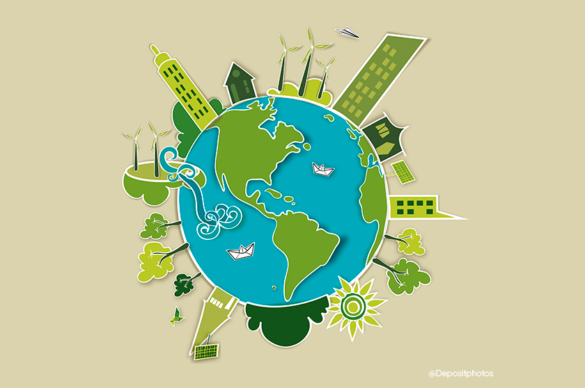
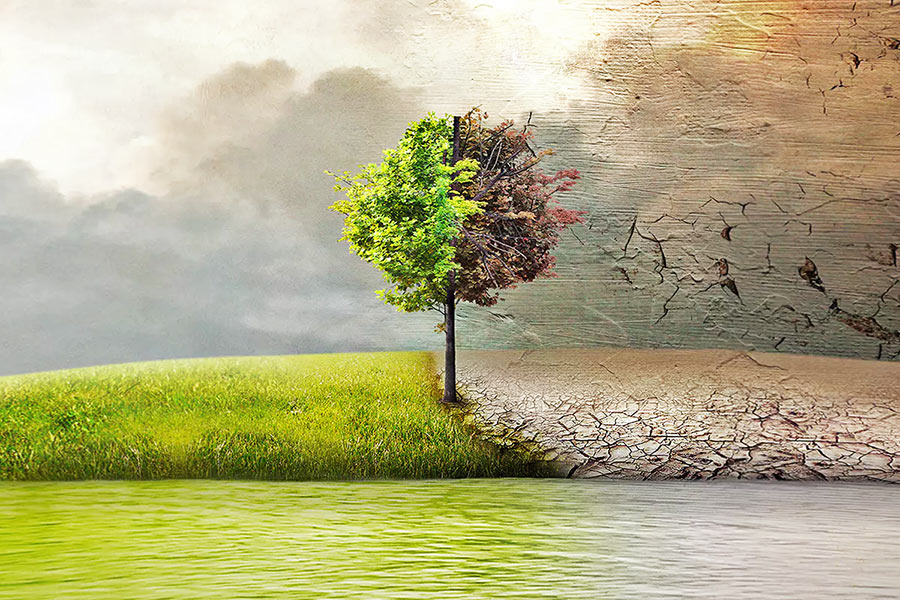
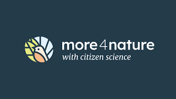
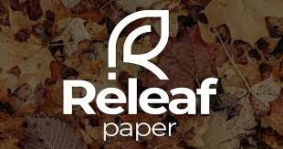

Проект "Eco Моніторинг" спрямований на створення інтерактивної веб-платформи, що надає користувачам доступ до актуальної інформації про стан екології в їхньому регіоні. За допомогою цього сайту користувачі зможуть моніторити якість повітря, викиди CO₂, ефективність переробки сміття, споживання енергії та стан місцевих екосистем.
Введіть навзу свого міста щоб слідкувати за його екосистемою
Найновіші екопроекти
-

Зелене відновлення українських громад
Програма підтримує громадські організації, які впроваджують проєкти з відновлення та адаптації до змін клімату в різних містах та громадах України.
-

Проєкт «Зелений щит»
Студенти з Маріуполя висадили хвойні дерева та кущі для зменшення шуму та пилу біля свого коледжу, покращуючи екологічну ситуацію в навчальному закладі.
-

Локальні проєкти з адаптації до зміни клімату
Громадські організації реалізують проєкти в Сумах, Запоріжжі, Люботині та інших громадах, спрямовані на зелене відновлення та адаптацію до кліматичних змін.
-

Проєкт more4nature
Національний екологічний центр України працює над розширенням можливостей громадян у забезпеченні дотримання екологічних норм через моніторинг та звітування.
-

Як Releaf Paper робить папір з листя.
Від шкільного проєкту до стартапу на мільйони.
-
.png)
БіоТЕЦ компанії МХП
Компанія «Миронівський хлібопродукт» запустила біоТЕЦ, яка генерує енергію з відходів виробництва, забезпечуючи енергією власні потреби та зменшуючи викиди парникових газів.